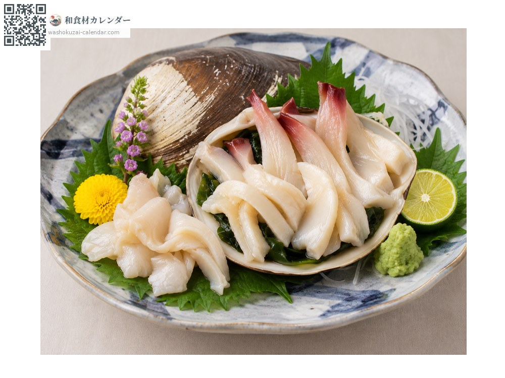
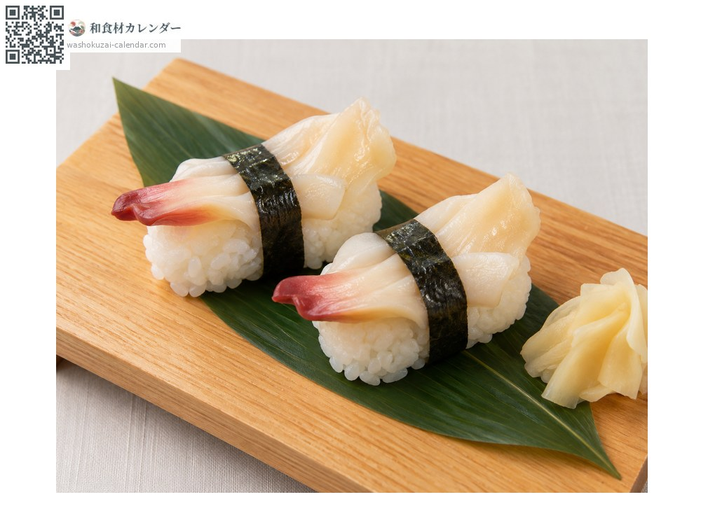
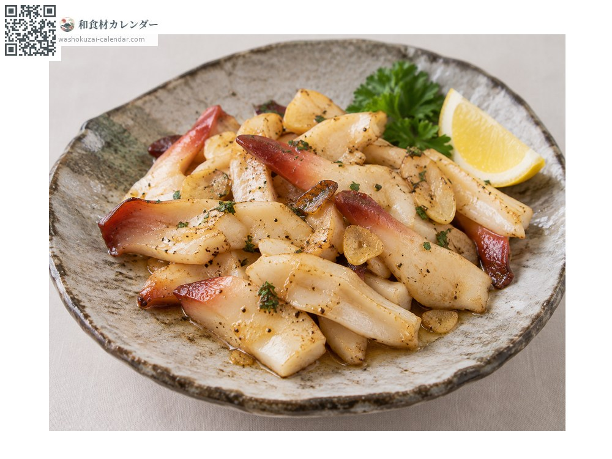

海鲜
象拔蚌（海松贝）
ミル貝 みるがい
应季时期为4月、5月、6月

应季时期
1月
2月
3月
4月
5月
6月
7月
8月
9月
10月
11月
12月
应季有供应
烹饪方法

生鱼片
把水管快速焯水。口感爽脆，甜味很强。

寿司
作为握寿司的配料很受重视，水管的黑色部分很美。

黄油烧
快速煎一下，加热过久会变硬。
挑选方法
水管粗而饱满、碰触会收缩。黑色外皮有光泽。
保存方法
鲜度掉得快。焯水去皮后冷藏，当天食用。
主要产地
小知识
正式名称为海松食。因为水管上会附著名为海松的海藻而得名。渔获量极少，是贝类中最高级的。食用的是水管部分。